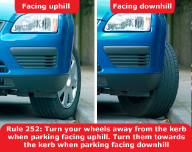

You MUST NOT park on a road at night facing against the direction of the traffic flow unless in a recognised parking space. Laws CUR reg 101 & RVLR reg 24
All vehicles MUST display parking lights when
parked on a road or a lay-by on a road with a speed limit greater
than 30 mph (48 km/h).
Law RVLR reg 24
Cars, goods vehicles not exceeding 1525 kg unladen weight, invalid carriages, motorcycles and pedal cycles may be parked without lights on a road (or lay-by) with a speed limit of 30 mph (48 km/h) or less if they are:
Other vehicles and trailers, and all vehicles with projecting loads,
MUST NOT be left on a road at night without
lights.
Laws RVLR reg 24 & CUR reg 82(7)
Parking in fog. It is especially dangerous to park on the road in fog. If it is unavoidable, leave your parking lights or sidelights on.
Parking on hills. If you park on a hill you should:
